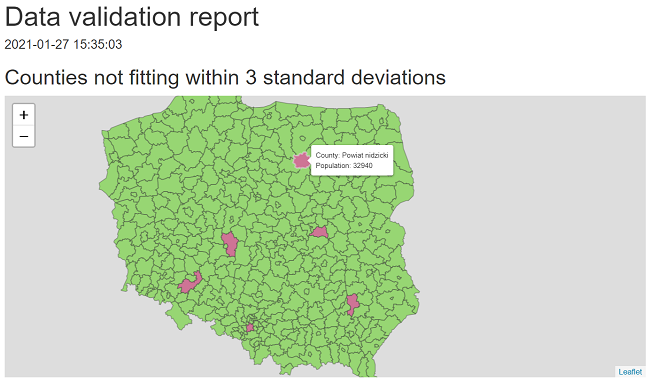

Introduction
data.validator is a set of tools for creating reports
based on validation results from assertr.
It provides tools for creating user-friendly reports that you can send by email, store in a logs folder, or generate automatically with RStudio Connect.
Validate data
This is a basic example of how to validate data:
library(assertr)
library(dplyr)
validate(mtcars) %>%
validate_cols(description = "vs and am values equal 0 or 2 only",
in_set(c(0, 2)), vs, am) %>%
validate_cols(description = "vs and am values should equal 3 or 4",
skip_chain_opts = TRUE,
error_fun = warning_append, in_set(c(3, 4)), gear, carb) %>%
validate_rows(description = "Each row sum for am:vs columns is less or equal 1",
rowSums, within_bounds(0, 1), vs:am) %>%
validate_cols(description = "For wt and qsec we have: abs(col) < 2 * sd(col)",
within_n_sds(2), wt, qsec) %>%
validate_if(description = "Column drat has only positive values",
drat > 0) %>%
validate_if(description = "Column drat has only values larger than 3",
drat > 3) %>%
add_results(report)See the assertr
vignette for the full specification.
Present results with data.validator
The first step is to create a validator.
library(data.validator)
report <- data_validation_report()Next we have to add validation results to the validator.
library(assertr)
library(dplyr)
validate(mtcars) %>%
validate_cols(description = "vs and am values equal 0 or 2 only",
in_set(c(0, 2)), vs, am) %>%
validate_cols(description = "vs and am values should equal 3 or 4",
skip_chain_opts = TRUE, error_fun = warning_append,
in_set(c(3, 4)), gear, carb) %>%
validate_rows(description = "Each row sum for am:vs columns is less or equal 1",
rowSums, within_bounds(0, 1), vs:am) %>%
validate_cols(description = "For wt and qsec we have: abs(col) < 2 * sd(col)",
within_n_sds(2), wt, qsec) %>%
validate_if(description = "Column drat has only positive values",
drat > 0) %>%
validate_if(description = "Column drat has only values larger than 3",
drat > 3) %>%
add_results(report)Finally, we use one of the available methods to present the results.
Either print the summary:
print(report)
#> Validation summary:
#> Number of successful validations: 1
#> Number of validations with warnings: 1
#> Number of failed validations: 4
#>
#> Advanced view:
#>
#>
#> |table_name |description |type | total_violations|
#> |:----------|:-------------------------------------------------|:-------|----------------:|
#> |mtcars |Column drat has only positive values |success | NA|
#> |mtcars |Column drat has only values larger than 3 |error | 4|
#> |mtcars |Each row sum for am:vs columns is less or equal 1 |error | 7|
#> |mtcars |For wt and qsec we have: abs(col) < 2 * sd(col) |error | 4|
#> |mtcars |vs and am values equal 0 or 2 only |error | 27|
#> |mtcars |vs and am values should equal 3 or 4 |warning | 24|or save it as an HTML report.
save_report(report)Creating custom reports
Define a function that has a validation_results
parameter and returns an HTML object or HTML widget. The
validation_results parameter is assumed to be passed as a
results table extracted with get_results(validator).
Note The function can also store optional parameters that
should be passed to the save_report function while
generating a new report.
In this example we create a custom report that shows validation results of checking whether population across Polish counties fits within 3 standard deviations.
library(magrittr)
library(assertr)
library(data.validator)
report <- data_validation_report()
file <- system.file("extdata", "population.csv", package = "data.validator")
population <- read.csv(file, colClasses = c("character", "character", "character",
"integer", "integer", "integer"))
validate(population) %>%
validate_cols(within_n_sds(3), total) %>%
add_results(report)
print(report)
#> Validation summary:
#> Number of successful validations: 0
#> Number of validations with warnings: 0
#> Number of failed validations: 1
#>
#> Advanced view:
#>
#>
#> |table_name |description |type | total_violations|
#> |:----------|:-----------|:-----|----------------:|
#> |population |NA |error | 6|We can also present the results on a Leaflet map.
render_leaflet_report <- function(validation_results, population_data, correct_col, violated_col) {
file <- system.file("extdata", "counties.json", package = "data.validator")
states <- rgdal::readOGR(file, GDAL1_integer64_policy = TRUE, verbose = FALSE)
violated <- validation_results %>%
tidyr::unnest(error_df, keep_empty = TRUE) %>%
dplyr::pull(index)
states@data <- dplyr::left_join(states@data, population_data,
by = c("JPT_KOD_JE" = "county_ID"))
states@data$color <- correct_col
states@data$color[violated] <- violated_col
states@data$label <- glue::glue("County: {states@data$county} <br>",
"Population: {states@data$total}")
htmltools::tagList(
htmltools::h2("Counties not fitting within 3 standard deviations"),
leaflet::leaflet(states) %>%
leaflet::addPolygons(color = "#444444", weight = 1, smoothFactor = 0.5,
opacity = 0.5, fillOpacity = 0.5,
fillColor = states@data$color,
label = states@data$label %>% lapply(htmltools::HTML),
highlightOptions = leaflet::highlightOptions(color = "white",
weight = 2,
bringToFront = TRUE))
)
}
save_report(
report,
ui_constructor = render_leaflet_report,
population_data = population,
correct_col = "#52cf0a",
violated_col = "#bf0b4d"
)
Creating custom report templates
In order to generate R Markdown reports data.validator
uses a predefined report template like the one below.
---
title: Data validation report
output: html_document
params:
generate_report_html: !expr function(...) {}
extra_params: !expr list()
---
#### `r format(Sys.time(), "%Y-%m-%d %H:%M:%S")`
```{r generate_report, echo = FALSE}
params$generate_report_html(params$extra_params)
```You can use the default template as a basis for creating your own template. In order to do this, first load the package in RStudio. Then select File → New File → R Markdown → From Template → Simple structure for HTML report summary.
Next modify the template by adding for example a custom title or
graphics. Leave the params section in the header unchanged,
as well as the generate_report content renderer chunk.
When calling the save_report function, make sure that to
specify the path to the custom template in the template
parameter.
Using the package in production
The package is successfully used by Appsilon in a production environment for protecting Shiny apps against being run on incorrect data.
The workflow is based on the steps below:
Running RStudio Connect Scheduler daily.
The scheduler sources the data from a PostgreSQL table and validates it based on predefined rules.
Based on validation results a new
data.validatorreport is created.-
- When data validation rules are violated:
The data provider and the person responsible for data quality receive a report via email. Thanks to
assertrfunctionality, the report is easily understandable for both technical and non-technical persons.The data provider makes the required data fixes.
- When the data meets all validation rules:
- A specific trigger is sent in order to reload the data in the Shiny app.
More examples
For more options check the package documentation or examples.